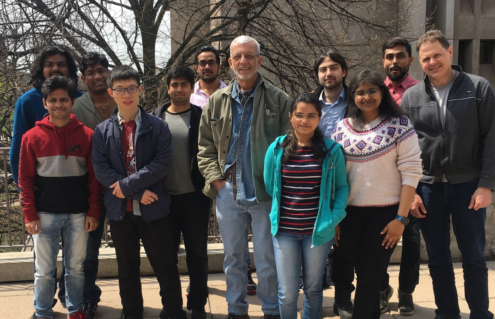
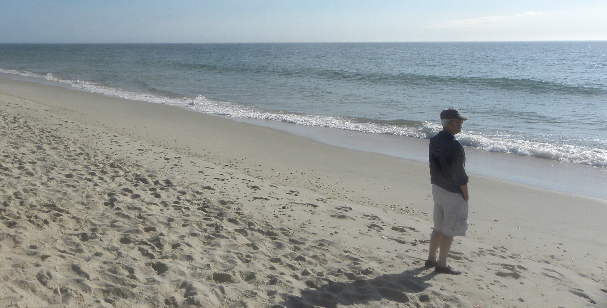

about
Jim Fawcett
11/16/2022
Jim Fawcett, Ph.D.
Emeritus Teaching Professor, Software Developer, & Wed Designer
Formerly System Engineer, Software Engineer, Manager for General Electric Co., Syracuse NY
" 'I think I should understand that better', Alice said very politely,
'if I had it written down: but I can't quite follow it as you say it.' "
- Lewis Carroll, Alice in wonderland
- Lewis Carroll, Alice in wonderland
Great Ride

Front row:
Naman Parakh, Yilin Cui,
Harika Bandaru, Sonal Patil,
Mike Corley
Back row:
Nilesh Dwivedi, Naga Krishna,
Akash Bhosale, Vaibhav Kumar,
Ammar Salman, Ritesh Nair
Syracuse University Website
This github Website
Now What?
